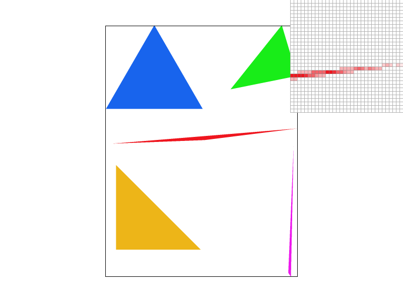
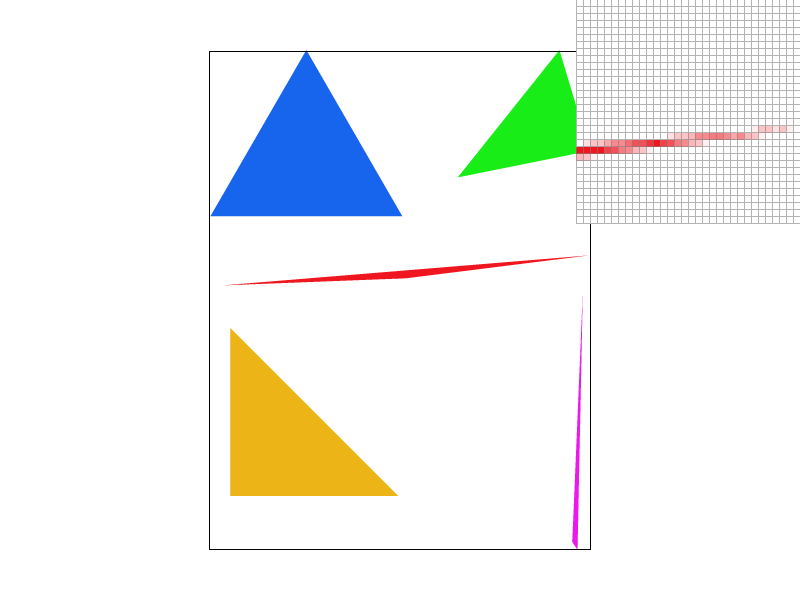
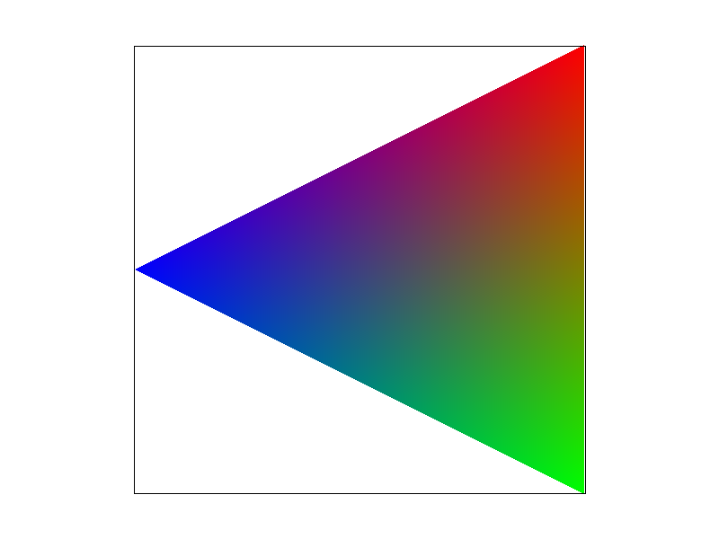
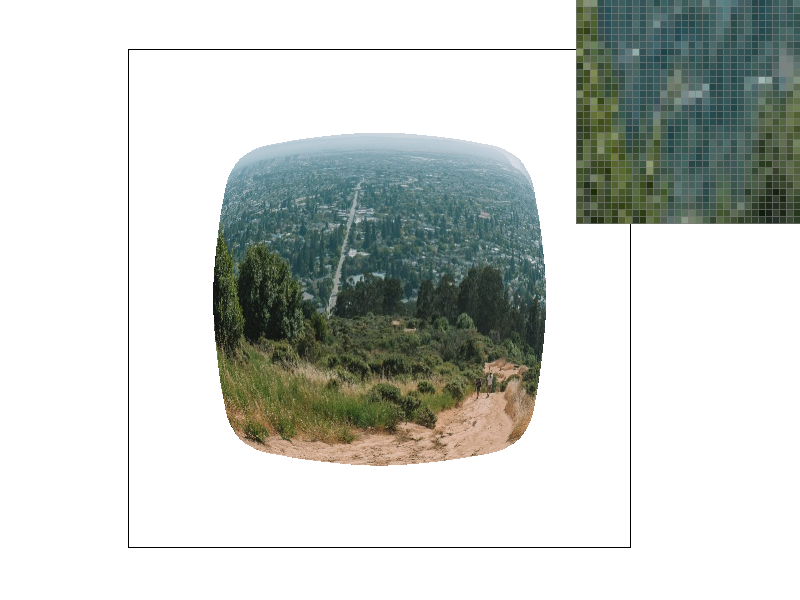
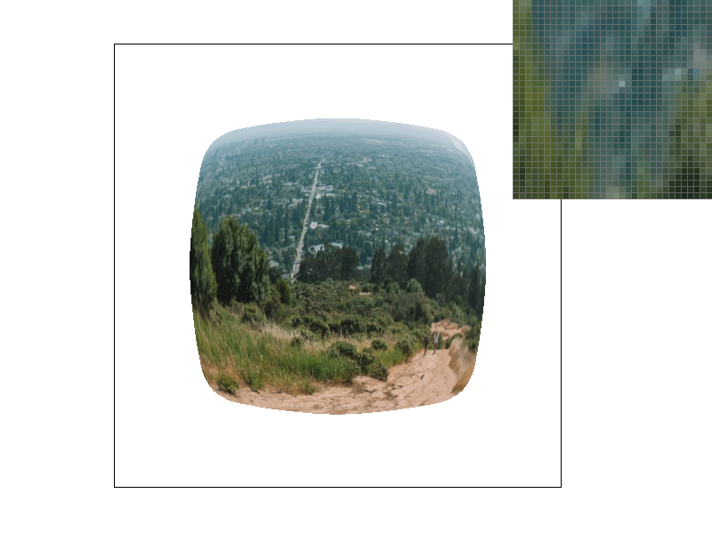

Overview
In this project, I iteratively built and iterated on fundamental components of a rasterization and texturing pipeline. I began by creating a simple implementation of a triangle rasterizer, which was highly unoptimized and was only capable of drawing solid-color triangles. Through a more refined approach that took local pixel context into account (a supersampling approach to anti-aliasing), I improved upon the obvious pitfalls of the naive approach which had results in visibly jagged edges. This was especially fun, since it revealed to me the intuitions underlying the FPS drop I observed in games I played when I turned on the ever-elusive "anti-aliasing" feature. After a substantial amount of work on the rasterization pipeline, I took a brief aside to develop a framework for transforming primitive shapes in an intuitive manner, which demonstrated the strengths of using the homogenous coordinate space (since it gave such a consistent 3x3 matrix interface to wildly different types of transforms). This allowed me to orchestrate the positioning of a multitude of primitive shapes in orientations that resulted in a coarse image of a simple robot. Then, I revisited the rasterization pipeline again, this time to build some more internal workings to allow me to compute the relative position of a pixel with a triangle to its vertices using Barycentric coordinates. This was important in order to allow me to map relative pixel locations to a texture, thus enabling me to draw images inside of the shape in a computationally accurate manner. Finally, I implemented more infrastructure and algorithms to improve performance by increasing cache efficiency through the pre-computation of lower-resolution mipmaps!
Section I: Rasterization
Part 1: Rasterizing single-color triangles
At its' core, rasterizing single-color triangles boils down to a few simple steps:
- Initialize your vertices as vectors.
- Make sure your vectors follow a consistent orientation (i.e. counter-clockwise).
- Compute the bounding box around your triangle.
- Loop through every pixel in your bounding box.
- Check if the pixel is inside the triangle
- If the pixel is inside the triangle, set its' color!
Part 2: Antialiasing triangles
The supersampling algorithm I followed worked as follows: (1) perform the in-triangle point tests n times (equally subdivided within a pixel) per pixel, storing each sub-pixel's result in a n*width*height supersampled buffer. During render-time, the supersampled buffer is downsampled to the size of the actual frame buffer by weighting the color by the average sub-pixel in-triangle proportion. Supersampling is extremely useful since it provides a very systematic and intuitive algorithm to anti-alias/remove the jagged edges that are present when using a naive rasterization implementation. In order to integrate this supersampling algorithm, I had to dynamically resize and allocate memory to the supersample buffer on-the-fly every time the user updated the GUI selection for sampling rate. Although there is a higher memory usage to storing the larger supersample buffer instead of just computing these values on the fly, the supersample buffer was extremely for later implementations in the rasterization project. In order to maintain the larger supersample buffer, I also had to edit the resolve_to_frame_buffer() function to perform the averaging downsampling when turning supersamples -> frame buffer.
As you can see in the visualizations below, higher degrees of supersampling resulted in better representation of a very skinny triangle corner (the slim red corner). The naive rasterization pipeline with no supersampling (first image) clearly has shape inconsistency, since there are intermittent pixels that are dropped since the thin triangle edge doesn't intersect the perfect center of the pixel. However, as sample rate (using supersampling) is increased, it is evident that this artifact slowly fades away, since supersampling takes into account more points within the pixel boundary, thus allowing us to more faithfully represent the triangle even when the edge is extremely thin. Supersampling gives a higher chance that very small parts of a primitive are going to be well represented since there are more points that the primitive can intersect! Additionally, supersampling tends to smooth the jagged edge boundary between the shape and the background, since it fades the edge in and out due to more points intersected.

|
|
|

|

|
Part 3: Transforms
Here, I made the robot make a snow angel by moving both of his arms and legs in a sweeping motion!
Section II: Sampling
Part 4: Barycentric coordinates
Barycentric coordinates allow us to represent any point only by scaling and adding the vertices of the triangle. This is extremely useful since all the points inside the triangle can be represented by 3 variables that add up to 1, representing how close/far each point is from each of the vertices. In order to further demonstrate this, I created the bottom left triangle visualization. Each vertex is assigned a core color (red, green, blue), and then each point within the triangle is colored by first computing the barycentric coordinates (which gives us 3 numbers that represent how far the point is from each vertex) and then those variables are used to scale each resepective coordinate's color value, which is then summed up to compute the points' final color. Doing this for all points inside the triangle, we can clearly see that a smooth transition from each color throughout the entire triangle.
|

|

|
Part 5: "Pixel sampling" for texture mapping
When mapping a texture to a primitive shape, figuring out which pixel in the texture image maps to a sample (in screen-space) is not trivial! Pixel-sampling methods let us define how to map the texture image to the screenspace. Nearest-neighbor pixel sampling is quite simple: first, obtain the normalized UV coordinate (i.e. through barycentric coordinates), then scale the normalized coordinate to the texture map height/width, then identify the *nearest* texel, and set the color of the screen-space coordinate to that texel color. As you can see in the figures below, this actually works alright! However, sometimes the re-mapped normalized uv coordinate doesn't exactly lie on a texel, and the nearest neighbor pixel sampling method tries to reconcile this by selecting the closest texel. Bilinear sampling handles the ambiguity described here in a slightly different way. It is almost identical to the nearest-neighbor sampling, except when it is looking up the re-mapped uv coordinate in the texture image, it DOES NOT select the nearest texel color. Rather, it samples all 4 surrounding texels to the desired re-mapped uv coordinate, and then interpolates the top two and bottom two pixels horizontally (via linear interpolation, which means that we end up with 2 values), and then it interpolates between those resulting color values to obtain an estimate through two sets of linear interpolations. This allows us to return a texel color that is scaled relative to how close/far the desired coordinate is from the texel samples we *do* have. As can be seen in the figures below, nearest neighbor sampling always results in "blockier" and more jagged results than bilinear sampling for a given sample rate. Clearly, bilinear sampling defeats nearest sampling. When the texture is extremely high resolution, there generally won't be too much of a visual difference between both sampling methods, but if the texture is comparatively lower resolution, then bilinear sampling will seem much much smoother than nearest neighbor sampling.
|
|
|
|
|
|
Part 6: "Level sampling" with mipmaps for texture mapping
In the case that the texture is much higher-resolution than the screenspace coordinates we're sampling (i.e. one screenspace pixel move maps to multiple texel moves), naive level sampling (sampling the full-resolution texture) results in some artifacts and jitteriness in color perception. As such, it is useful to pre-compute lower-resolution texture maps (called texels), so that we can sample the "smoothed" lower res mipmap levels in the described cases. In order to implement this though, I needed some sort of way to figure out the appropriate mipmap level based on the current pixel location. I implemented this by calculating the approximate rate of change of the normalized uv coordinates and then scaling that to the size of the texture map. Using a level-sampling method of zero meant that we always use the full-resolution texture. As such, there is no extra memory or time needed to pre-compute the extra levels, but it has the worst antialiasing power. Using a level-sampling method of nearest calculated the approximate level based on the jacobian method I described earlier, and then casting that into nearest mipmap level we've pre-computed. This method requires pre-computation of mipmap levels, which does take up extra space in memory, but can technically take up less overall space in the memory during runtime since the smaller mipmap level could be loaded into memory in contrast to the full-resolution mipmap at times. This does take more time to compute since the mipmap level have to be generated ahead of time, but definitely shows an improvement in antialiasing power. Lastly, using a linear level sampling method involves computing the mipmap level as a continious number, interpolating between texel color determined by the two nearest pre-computed levels. As such, this has the most antialiasing power, uses up the most memory, since two mipmaps are loaded into memory, and takes the longest to compute.
|
|

|
|
|

|